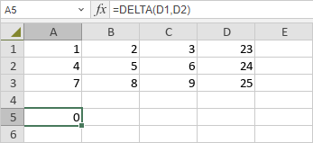

DELTA funkcija
Funkcija DELTA je jedna od inženjerskih funkcija. Koristi se za proveru da li su dva broja jednaka. Funkcija vraća 1 ako su brojevi jednaki, a 0 u suprotnom.
Sintaksa
DELTA(number1, [number2])
Funkcija DELTA ima sledeće argumente:
| Argument | Opis |
|---|---|
| number1 | Prvi broj. |
| number2 | Drugi broj. Ovaj argument je opcion. Ako se izostavi, funkcija pretpostavlja da je number2 0. |
Napomene
Kako primeniti funkciju DELTA.
Primeri
Slika ispod prikazuje rezultat koji vraća funkcija DELTA.
